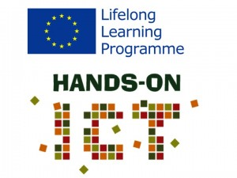
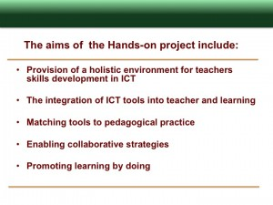

This workshop was designed to involve the wider MirandaNet community in developing signing up, dissemination, sustainability strategies to support the EU HandsOn project. The aims of this project are:
{kind=link}
{kind=link}
The workshop programme looked at these aims from the point of view of introducing MOOCs into education:
- 1000 – 1130: Rethinking Education in the Digital Era: Putting MOOCs in context; Chris Yapp
- 1130-1200 Introducing the HandsOn Programme and community building: Christina Preston
- 1215 – 1230 The HANDSON Project in the context of 21st Century Learning Platforms: Marilyn Leask and Sarah Younie
- 1215 -1230: Building a mind map as a resource for professional knowledge: Theo Kuechel
- 1230 – 1245 Accrediting online learning – Ian Lynch
- Lunch
- 1400-1500 – Workshop on MOOCs Learning spaces –the big issues
- 1500-1600 Workshop group topics
- Creativity in teaching and learning
- Factors involved in learning online
- Constructing a map of professional knowledge
- Talking about classroom practice
- Ideas for dissemination and sustaining the community
Some questions we tackled in this workshop were:
Some questions we tackled in this workshop were:
The big picture
How can we create a framework for education to become evidence based?
How do we balance the evaluation of educational technology contexts in pedagogical, social and economic aspects of learning?
How do we build the system wide knowledge base for transformation?
How do we build the learning competences of professionals to design, deliver and enhance the systems of learning, based on evidence?
How do MOOCs fit into the goals of education?
How can a MOOC reflect the outcomes we seek for learners in a 21st Century social, economic and technological context?What kind of skills, competences and attitudes (personal, creativity, knowledge) can a MOOC support?
Can a MOOC support the value systems of a learning institutions?
How can a MOOC help in the teaching of ICT?
How much should teachers know about ICT before they use a MOOC?
Does the use of a MOOC develop students for the workplace?
What is will a 21st Century MOOC look like?
A summary of the programme content
1. Rethinking Education in the Digital Era: putting the impact of MOOCs
in context in schools, in universities and in vocational education
Chris Yapp
(A version of this draft article will be put in the HandsOn Moodle and Blog)
What is a MOOC?
When Dr Chris Yapp spoke in London to the MirandaNet members and associates who are supporting the New EU Handson Project because the Handson team are seeking to create a MOOC with mentoring that will provide an exciting new learning environment where teachers, students and workers can undertake effective learning.
In the first place Dr Yapp defined this term, Massive Open Online Course, which he said is likely to enter into our common vernacular. A MOOC is a course or unit accessible, usually with no prerequisites, to anyone who wishes to enrol, usually for free, and with self-assessment or peer assessment along the way. Many now are being offered by household name universities who may not give you credit towards a degree, but will often award certificates of participation, or even a grade
Most MOOCs are now delivered by acknowledged experts and outstanding teachers. They are very new, and no-one yet knows what they will mean or what role they will play. But many already believe that Pandora’s box has been opened. He acknowledged the work of [1]Professor Jane den Hollander, Deakin University for this definition.
Will MOOCs change education?
Dr Chris Yapp warned the MirandaNet members and associates who are supporting the New EU Handson Project that changing pedagogy is more important than modifying platforms and massifying outreach.
He quotes Diana Laurillard, who in her book, Opening Up Education “Using technology to improve education is not rocket science…it is much, much harder than that”
In the recent past it used to be IWBs and then tablets that would transform education. He has heard this kind fo comment a number of times. Others espcted to be catalysts for change have been Second Life, laptops, podcasts- in fact none of these products will change anything. When we take ideas and translate them into policy or practice too quickly we often lose the plot.
Increase in technology available – e.g. 2:1 ratio for computer in classrooms – is better resourced education system but not a better system. New models of teaching and learning and organisation of education enabled by IT can transform education- but too often there are gaps in organisational development of schools.
Education in the UK seems to be developing in an opposite way to buiness. Since the 1960s schools have got bigger. Businesses have got smaller. SMEs, freelance. Heading towards 50% freelance in London. MOOCS in education could be going in the wrong direction as well.
There is a core challenge that needs to be considered in the adoption of MOOCs.
Learning is not an industrial process capable of automation. In fact Chris is working with FE colleges that are getting rid of VLEs.
On the contrary education is a set of human processes supported and transformed by technology developments. High technology in learning requires a high skilled workforce. As a species we create technology that transforms our processes. We shouldn’t be risking dumbing down teaching by introducing high technology like MOOCs. More thought is needed in the pedagogical design.
What do we mean by IT? From iT to It – Technology has been focus. Technology is becoming more pervasive and less relevant. ‘Big data’ is now around. A MOOC- giving huge amounts of data in the pathways of individuals. People take what they want from a course, then give up. They know what they want. Let’s think about
Big Data for education – focusing on huge amounts of data available professional could generate evidence for what works.
From a cost viewpoint and from a strategic viewpoint humans have the possibility of getting far more evidence now than before. Using Vassian techniques rather than Boolean techniques even more persuasive evidence turns up.
So information technology causes change, but also is a means of effecting change.
Claus Moser said ‘Education is cause and consequence of economic progress”.
But we have polarised camps. How do we get to the point where we use technology appropriately to embed in a reformed education system? Until we know this MOOCs will be no more effective than other technologies in the classroom or outside.
The main reason is that the Interplay between cause and effect is deeply problematic with ICT. We talk about IT as though it is all the same. In fact there are two classes:
- Sustaining technologies
- Disruptive technologies.
In other words some technologies allow you to teach in the same way but better These sustaining technologies embed a lot quicker. For example IWB appear to be sustaining technologies: add value to old class teaching.
Disruptive technologies cause educators to question how they do things. These take longer to embed. For example in the Learning lab at Wolverhampton practice changed over two years: from teacher talking to kids from the front they circled around the child and constructive talking and learning was increased
MOOCs can be use for conventional teaching on a large scale and they are. Nevertheless, the World Wide Web is fundamentally a disruptive technology. No way round it. Some educators have tried to create walled gardens and limit access. There is still a myth that use of the internet can be controlled. Virtual learning enviroments, promoted by the UK government did this. Now there is a need to dismantle them strategically.
Indeed Chris suggests that we don’t want to talk about technology bit about learning – what would a Vygotskiyan learning platform look like? Then which technologies should the HandsOn team use to deliver the learning goals they have identified?
It is going to be the technology platform that wins in the long term. This will not happen if the schools, colleges and universities that are chosen are learning organisation that can articulate the philosophy of the institution. In this case the HandsOn technology would be part a pedagogical plan not leading the plan.
A brainstorming session
A digital map developed in the brainstorming session based on the thinking hats exercises can be found here.
The exercises were:
White Hat: current good practice in promoting creativity in the use of ICT
Green Hat: innovation, provocation and investigation, seeing where a thought goes
Black Hat: Discernment: identifying reasons to be cautious and conservative
White Hat: current good practice in promoting creativity in the use of ICT
Teachers and mentors in a MOOC need to consider some key points
Those how pilot must have the support of their institution
Students will need detailed navigation help
A strong sense of community should be created with common aims
Aims of learning need to be agreed at the start
They need to understand the roles they can take in the threads
Help is required in learning how to send a valuable message
Isolated students need to be drawn back in
A code of conduct needs to be agreed by all
Interactivity is important
Strategies for building collaborative knowledge need to be explicit
Visual learning opportunities are important
Accreditation should be offered that supports constructive learning
Without associated accreditation sustainability will be difficult
A good platform needs to have
Lecture videos that can be downloaded, not streamed
Some form of mentoring
Tests to allow the student to assess what they know
Must be some mediation and guidance in discussion
Collaborative tools are important
Benefits
Anyone can drop in and out at no cost
Access for more people who cannot take conventional routes to education
Free info for anyone who wants it
Can make learning relationships
Can accept people with varied experience
Badges give some kind of reward
Black Hat: Discernment: identifying reasons to be cautious and conservativeProblems
Are the big universities making them free now while waiting to put the small ones out of business
With no personal or financial commitment hard to stay motivated
Too many lurkers
Some people interact too much and there are trolls
Threads can be repetitive and boring if not mediated
Can be just the same information transmission pedagogy -just new wrapper
Content is free these days so no need to provide a MOOC
High drop out rate
Lack of any personal contact is not real education…
How real is the assessment if the student is not personally known
Can be hard if there are too many levels of experience to start with
Green Hat: innovation, provocation and investigation, seeing where a thought goes
Action suggested
| A conference and workshop programme for 2013/2014 | Suggested locations in appendix | WP7 |
| Support from companies for forthcoming exhibitions and conferences | IRIS, Follett, Ingot, Gebol, LightSpeed, Steljes. Merc, Yellow Dot | WP 7 |
| Support from professional organisations | ITTE, Naace, MirandaNet, CAS, BCS, Teacher Development Trust, TeachMeet, BESA | WP6/7 |
| Offers from school clusters to pilot HandsOn and fund the teachers as well as VET and HE groups | Elliott Foundation, Tideway, Warden Park, Bedfordshire and Leicester Universities, ingots | WP6/WP5 |
| Coverage in education press | John Galloway, Terry Freedman, Merlin John | WP7 |
| Developing pedagogy | Leicester and Bedfordshire | WP3 |
| Developing community | Leicester and Bedfordshire | WP6 |
| MOOC design ideas | BCS, Leicester and Bedfordshire | WP4 |
| Ideas for accreditation of courses | Ingots and Gebol | WP6 |
| Ideas about effective online learning | BCS, Leicester and Bedfordshire | WP5 |
Recommended reading
Don’t Lecture Me: Rethinking How College Students Learn
“Let me posit a duplication theory of education value: if something can be duplicated with limited costs, it can’t serve as a value point for higher education. Content is easily duplicated and has no value. What is valuable, however, is that which can’t be duplicated without additional input costs: personal feedback and assessment, contextualized and personalized navigation through complex topics, encouragement, questioning by a faculty member to promote deeper thinking, and a context and infrastructure of learning. Basically: human input costs make education valuable. We can’t duplicate personal interaction without spending more money. We can scale content, but we can’t scale encouragement. We can improve lecturing through peer teaching, but we can’t scale the timely interventions and nudges by faculty that influence deeper learning.
Universities that thrive in the future will be those that recognize the need for new value point positioning. Some will pursue an integration approach to value creation, others will rely on world-class faculty, and still others will rely on huge research projects or successful sports teams. Those will be anomalies and outliers. The vast majority of universities that will educate humanity in the coming decades will be those that structure their value point on elements that cannot be easily duplicated and scaled, or at minimum, require input costs to do so. “
Dominik Lukes : Education and Technology Specialist
Some urls referring to MOOCs…
http://www.elearnspace.org/blog/2012/07/25/moocs-are-really-a-platform
http://www8.open.ac.uk/platform/news-and-features/ou-researchers-top-10-innovations-transform-education-in-five-years
http://ianinsheffield.wordpress.com/2012/06/03/mooccs101/
http://www.pranavmistry.com/projects/sixthsense/
http://www.ted.com/talks/view/lang/en//id/685
https://plus.google.com/111626127367496192147/posts
http://www.youtube.com/watch?v=9c6W4CCU9M4
http://www.sonicfoundry.com/webcast/practical-response-massive-open-online-courses-moocs
http://theconversation.edu.au/moocs-neither-the-death-of-the-university-nor-a-panacea-for-learning-8499
http://blogs.kqed.org/mindshift/2011/09/dont-lecture-me-rethinking-how-college-students-learn/